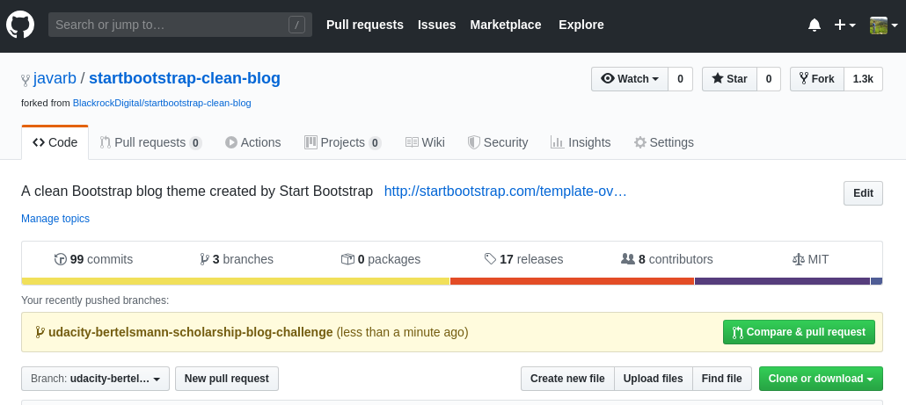
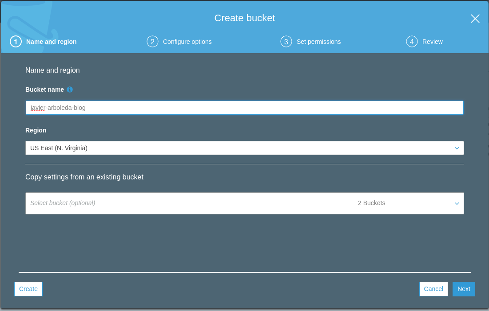
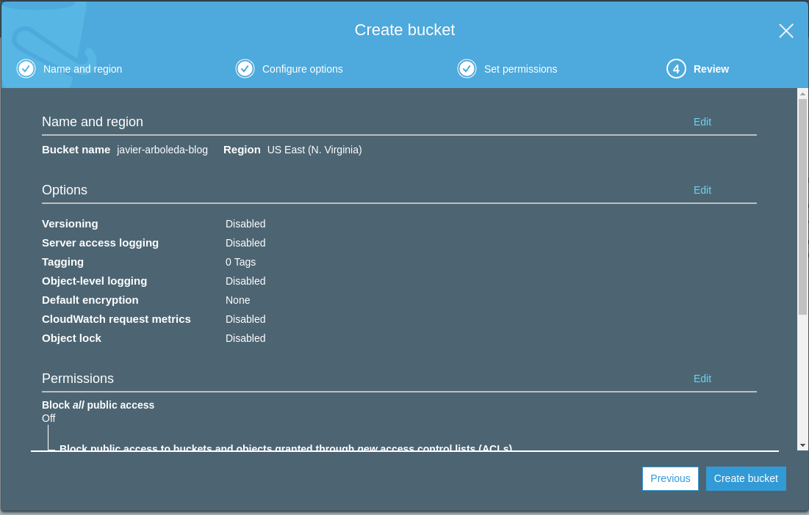
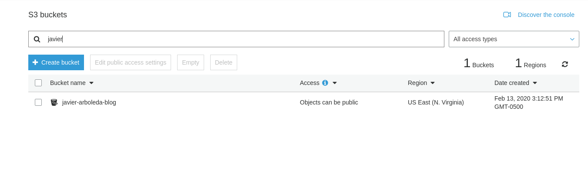
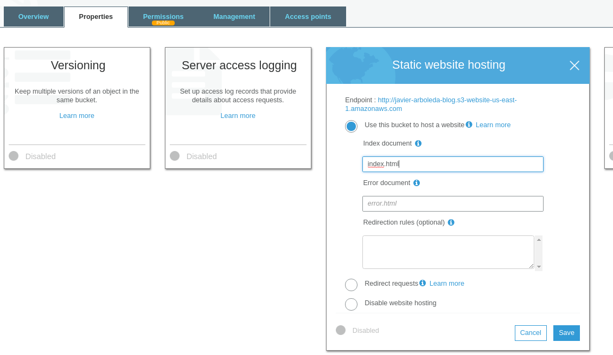
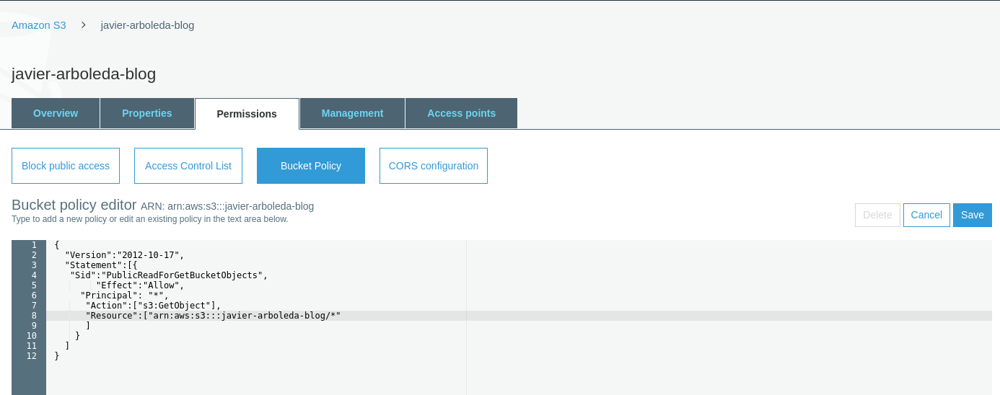
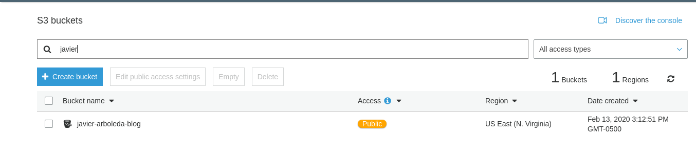
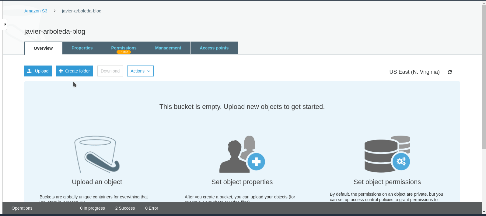

In this Blog post I will include what I think is a very useful information for other people can get inspired, and be encouraged to complete this challenge created by @Nilay.
So, next you can see the requirements from this challenge from @Robert Pullan:
"- First step: Select your favorite lesson among all 24 lessonsWarning: In this tutorial I am using several of the things we have seen on the course and specially git topics.
- Second step: Write a blog about it explaining everything about it what they learned how they learned etc...Second step: Write a blog about it explaining everything about it what they learned how they learned etc...
- Third step: Deploy that blog using aws (static/dynamic website). If you are unable to deploy on AWS, upload your blog on www.medium.com or on www.linkedin.com
- Fourth step: Submit your details in the following form and announce it with a link to your blog in the #celebrate channel.
Once you have completed the blog challenge don't forget to fill in this form and you can also add the link to this website using this repository"
As sometimes I tend to do the things in the harder way, I will letting you to know when you can do easier choices.
So, Do you want to know how to get your own blog over AWS S3?
Let's get started!
Phase 1 - Getting and preparing our Blog
I want to remember you this is all about a static blog, so the first thing we are going to need is that blog and its content which we will host on a AWS S3 bucket after.
You could have several options to get this job done. But for our purposes, I will place here what I think are two main:
1. To use the best of your skills and programm this from scratch or
2. To use a template.
Of course, the first one is funny and you can learn a lot, but the second is also funny, and you have some of the work done in advance, which is good so you can concentrate in the content, and also to code a little
in order to get your blog looking as you want.
So, no more words to say I chose the second one.
I got this excelent (in my oppinion) blog template called Clean Blog totally by free from https://startbootstrap.com/.
You have two options: You can download it or fork it from the Star Boostrap GitHub repo.
Well... I will give you a third option: You can clone it or fork from my own forked version of the Star Boostrap repo which contains this pretty same blog content.
I am working on the branch udacity-bertelsmann-scholarship-blog-challenge

Maybe at the first, the easier choice could seem just to download the code, make changes and jump to the AWS S3 bucket subject. But let me advice you to keep your blog code into a repository, in this way you can both,
have all the advantages or code versioning systems and also to practice a little what you have learnt!
Ok, I will show you next how I cloned locally my forked repo and started to work on it:
$ git clone git@github.com:javarb/startbootstrap-clean-blog.git
If you decided to fork or clone my repo you have to switch to udacity-bertelsmann-scholarship-blog-challenge branch in order to see my changes:
$ git checkout udacity-bertelsmann-scholarship-blog-challenge
Notes:
- If you are going to clone my repo, you will keep your changes only locally, you will not be able to push to my GitHub branch(es), so why not best to fork it and clone your own?
- If you are cloning from authors or forking, then surely you will want to create your own branch as I did (remember to use '-b' flag in the above command).
Now that you have the code in your computer you will edit your blog content using your favorite code editor. I would advise you to use Visual Studio Code.
If you need to get good images you can go to a free photos bank such as Unsplash, where you can get high resolution photos by free for your websites (remember to give credit to the photographers!)
Phase 2 - Launching on AWS S3
Now we are close of our objective, huh?
In really this part is easier thanks to the AWS guide to setting up a Static Website
The first thing we do is to login in our console, go to S3 section and select to create our S3 bucket. We choose an descriptive name for our bucket and select the region where it will be served.

We click on next and leave the options with their default values and next again.
After it we see the 'Set permissions' screen, so here we need to disabling the all public access defaul blockage (since we want everybody can se our blog)
Again, we click on next, review the sumamry information and click on 'Create bucket'.

Now we can see our bucket has been created and feel that we are really close to reach our goal!

But before that, we have other important steps to complete in order to our website be publicly available.
One thing we need to do is to make this bucket a web site hosting bucket. For that, we click on our bucket name and under the 'Properties' tab, we click over 'Static website Hosting' card
and then we need to provide our index document name and to take note of the enpoint name. Then you click on save.

We will need also to set the bucket policy, so all people can access its content from the internet. For this, you need go to the 'Permissions' tab of your bucket and add this content
on the Bucket policy editor:
{
"Version":"2012-10-17",
"Statement":[{
"Sid":"PublicReadForGetBucketObjects",
"Effect":"Allow",
"Principal": "*",
"Action":["s3:GetObject"],
"Resource":["arn:aws:s3:::your-bucket-name/*"]
}]
}
You must to replace 'your-bucket-name' with the name of your bucket. For example, my configuration looked like this:

After you click save, you can see how your bucket has become public now:

With these steps we have completed the required configurations, and now, our final step is to upload the website content. So in order to you can see how to complete that, in 'Overview', click on 'Upload' and just drag
and drop your project files:

Do you remember about your endpoint name? Well, you will need it now since we need to access our blog!!!
You can find it under the 'Properties' tab, and clicking on the 'Static website hosting' card. For example, the mine is:
http://javier-arboleda-blog.s3-website-us-east-1.amazonaws.com - here is where you are dude!
For your information, this name is composed of your bucket name and the AWS regional S3 URL endpoint. So, since I configured my bucket to be located on US East (N. Virginia), the
corresponding region endpoint is 's3-website-us-east-1.amazonaws.com'. A complete list of regional endpoints is Here
Thus, if all is going well, now are being able to see your new blog just in front of you! Sometimes this could take a little while receiving answer from the bucket,
but must not be much.
Always that you need to make changes, just drag and drop replacing needed files in the bucket and is done.
Now you know how to create a static blog and website on AWS S3.
I hope you have enjoyed reading and following my instructions, as I enjoyed writting them!
If so, please clap me on this same post on Medium